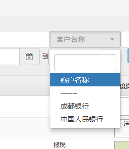

4.3. 普通fields¶
源代码位于 vuejs/fields/base.js
4.3.1. 基本内容¶
- field_base
基类，几乎有所逻辑都在里面。如果需要特殊的field，可以继承field_base，然后修改template
- field
Vue组件，在field_base外面套上了一层外观，例如label，error等。
4.3.2. 参数结构¶
field_base的参数都是采用的关键字参数，结构如下： 使用的 kw 结构:
kw={
errors:{},
row:{
username:'',
password:'',
pas2:'',
},
heads:[
{name:'username',label:'用户名',type:'text',required:true,autofocus:true},
]
}
<field name='username' :kw='kw' ></field>
4.3.3. search_select¶
具有搜索框的选择框。只需要在head中指定
head.type="search_select"就可以将select改变成search_select。使用到的三方组件:bootstrap-select